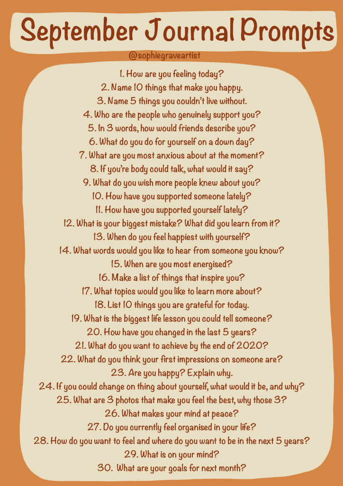

Well, when I say a journey, I very much mean a mental one, a journey of self growth. This idea of wanting to change my way of thinking has always been at the back of my mind but recently, within the past few days, two things have really wanted me to kickstart a journey of self growth.
The first being a youtube video by UnJadedJade called, ‘why we need to uplift women’, her videos have always inspired me and seeing her grow as a person especially over the past year is highly inspiring. This video in particular dives into the idea that the reason we are jealous of other people is because of our own insecurities by what has been ingrained in our brains of what we need from our lives, ie, pretty privilege or the perfect boyfriend. A question I now ask myself is ‘why am I jealous of this person?’ and to realise it can be down to something I feel I personally do not have. The second that made me realise I want to change my way of thinking was a poem written by a dear friend, Shannon Pendleton, called ‘Some Days’, click here to read her beautiful poem. The poem goes into body image and wishing to be different but learning to love yourself through love. I highly suggest giving it a read, as I believe we all go on a journey of loving and hating our body, I would like to think over the next year or so I can truly say I love my body for what it is, which recently has been a huge struggle.
Over this next ongoing journey I would love to be more sustainable in
all aspects of my life, feel more confident in myself and my abilities
and overall, be a better person. To reflect on my journey over time, I
will be journaling every day in my bullet journal of prompts that I have
made myself, if you so wish so come on this journey with me then feel
free to use the prompts below. Although, do not feel like you need a
bullet journal or notebook, I have found my notes page on my phone or
laptop are just as good when I am on the go! I will be spending Monday
August 31st setting out my goals for the next month, quarter and year
ready to start day one on Tuesday. I most likely will not be sharing my
answers on here unless I feel like it can kickstart a conversation etc
as obviously they can be quite personal questions, but nonetheless, I
hope you enjoy the prompts I have set out for you and my aim is to keep
them up each month for the foreseeable future for myself so I shall
share them with you too. If you do wish to come on this self love
journey with me, feel free to message me and we can chat regularly,
share some positivity and stay motivated.

September Journal Prompts 2020 Feel free to save the image above as a
reference point.